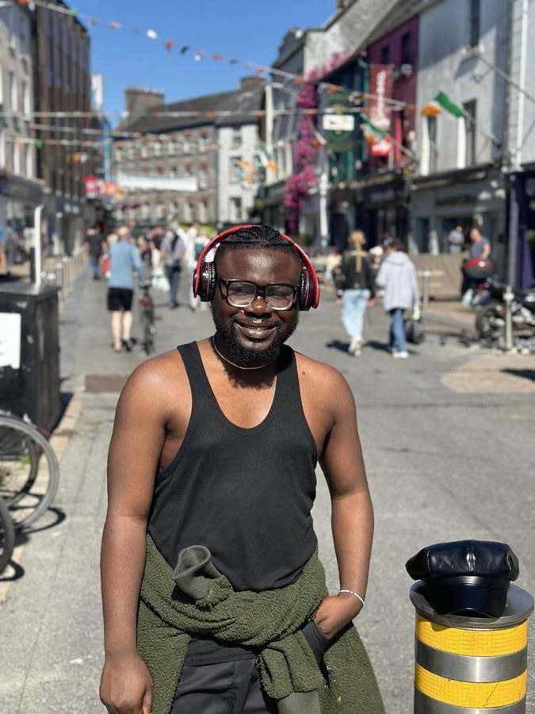
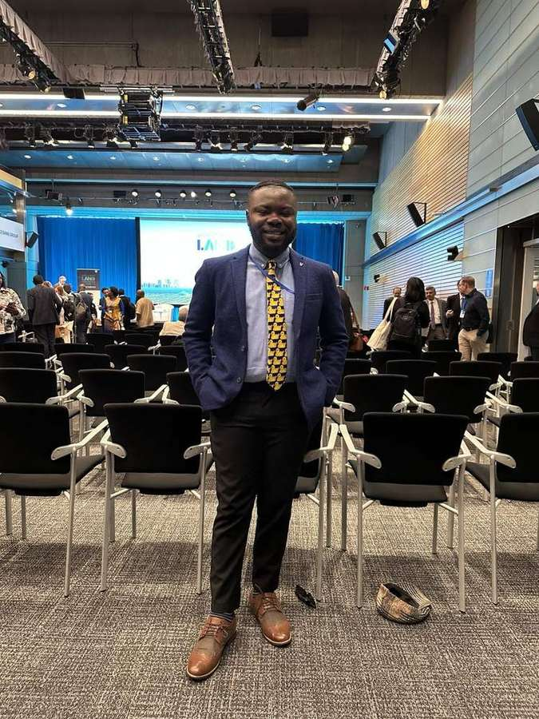

How I got here
A living account of the places, people and opportunities that shaped the work I do.

I studied accounting in Ghana, taught English in China, and now build agricultural and land-use models in Ireland. None of those sentences would have predicted the next one while I was living it.
Looking backwards has a way of making a life appear more carefully planned than it was. Mine was not. There were opportunities I prepared for, decisions I made, plans that changed, visas that arrived too late, people who opened doors, and places that became important long after I first arrived in them.
The About page has the short version of who I am and what I work on. This is the longer story.
Ghana: where it began
I studied Accounting at the University of Professional Studies, Accra. It looks some distance from the work I do now, but I do not think of it as an abandoned beginning. Accounting taught me to pay attention to numbers and organisations, and to the difference between what something appears to be and what the underlying records actually show. It took me years to see how useful that instinct would become.
After university I did my National Service with Ghana’s National Petroleum Authority. I had been living in Accra, and the posting sent me to Takoradi, one of the first times life moved me somewhere I had not planned to go. Takoradi was also my first taste of real responsibility. I worked nights and double shifts, and I was trusted to supervise. It was not glamorous, but it was an education of its own. University had taught me concepts; work began to show me what happens when procedures, rules and decisions meet the people who have to carry them out, and how differently one organisation looks depending on where inside it you stand.
I would not have called any of that an interest in policy implementation at the time. But the question stayed with me, and a few years later it came back as research: one of my early papers, published in Resources Policy, looked at how to measure safety performance in Ghana’s oil and gas industry.
China: a much bigger change than a degree
In 2019 I received a full scholarship for an MSc in Management Science and Engineering and moved to Taiyuan, in northern China. I knew China would be different. I was less prepared for how different the north would feel to someone arriving from Ghana, and the cold introduced itself quickly.
The larger change was intellectual. China was where I became much more deliberate about policy research and analysis. Instead of seeing only a result, I started asking what structure had produced it. Who were the actors? What assumptions sat underneath the analysis, and what evidence was it using? What happened when a policy moved off the page and into an economy or a community?
My research ranged across sustainability, development, environmental policy and energy economics. Energy held my attention because its decisions were so large: governments, industries and major firms could change what happened across a whole system, and thinking at that scale taught me to look for the links between institutions, incentives and outcomes. I later began doctoral study in China as well.

China became much more than a scholarship or a degree. The people around me became part of the education too.
Part of my life there never appeared on a transcript. I taught English as a second language to Chinese students, and I especially enjoyed the younger learners. I still love watching someone grow more confident as something that looked difficult begins to make sense.
Years later, I realised that teaching had sharpened something I would need in research too: understanding something yourself is one skill; explaining it clearly to another person is another. The same instinct carried into my work with colleagues. When someone was struggling with an analysis, I liked sitting down with them and working through it, not simply which button to press, but what the numbers were saying and whether the interpretation held up.
I have come to think of data analysis almost as a conversation. You learn how to talk to data. You also have to learn when to stop talking long enough to let the data answer back.
That pleasure in teaching and explaining has followed me into almost everything I have done since.
What moving teaches you
I left Ghana in 2019. At the time, I could not have known that I would not return home until 2024.
Living abroad brought opportunities that changed my life. It also taught me that mobility is not experienced equally. For some people, international travel is mostly a ticket, a passport and a timetable. For others, there are visa applications, appointments, waiting, uncertainty and the possibility that an opportunity may move faster than the permission needed to reach it.
I learned that particularly clearly with Germany. I was meant to join colleagues for a capacity-building training in Germany. My colleagues did not face the same visa requirement. I did. By the time my visa arrived, the training had already passed.
I eventually travelled to Germany anyway, but as a personal trip rather than for the capacity-building programme that had originally made the journey necessary. It was not some great tragedy, but it stayed with me because it showed how easily international mobility can look equal on paper while being very different in practice.
An opportunity can be available to two people and still be much easier for one of them to reach.
That is part of the immigrant experience too. Opportunity abroad can expand your life enormously, while the process of getting there, staying there and moving between places can remind you how much depends on documents, borders and circumstances that other people may rarely need to think about.
And none of that removes the other cost of movement: distance from home.
Ireland: beginning again
Eventually I left the doctoral path I had begun in China and moved to the University of Galway for a different PhD.
Before the research groups, conferences and models became part of the story, Ireland was simply somewhere new. A new country means learning small things all over again: routes, weather, shops, ways of speaking, and the rules everybody else seems to know without remembering when they learned them.
Then the intellectual change began. Much of my earlier work had been in energy economics and policy, where the important actors could be governments, industries and large institutions. Agriculture and land use brought the problem much closer to individual decisions.
A national government can set a climate target, a model can describe a pathway, and a sector can be told that its emissions must fall. But eventually somebody owns or works the land. Somebody has animals to feed, bills to pay, machinery already bought, a family involved in the farm, or a good reason for continuing to do something that may look inefficient when viewed only from above.
That shift pulled my attention towards farmers, land-use decisions, behavioural responses and the way costs are distributed across people and places. Later, while continuing the PhD, I joined the wider FORESIGHT and FUSION research environment at Galway as a Research Assistant, which drew me further into agricultural, climate and land-use modelling.

Research eventually gave me a community as well as a subject.
The subject had changed a great deal since accounting and my energy work, but the underlying questions had changed less than I first thought. Who makes the decision, and with what information? Which constraints are invisible from a distance? Who benefits, and who pays? What happens between a policy being designed and somebody actually having to respond to it?
My doctoral work sits inside those questions. A national model may say that livestock numbers should fall, that land should change use or that a technology should be adopted. A farmer still has to decide what to do on Monday morning. The distance between the aggregate pathway and that decision has become the part of the work I care about most.
Making somewhere unfamiliar feel ordinary
There is another Ireland story that does not happen inside the university.
Since leaving Ghana I have sometimes felt like a wanderer. Countries change, and so do the rooms and the people around the table. You learn new routes to work, new food, new weather, new ways of speaking, and all the small rules nobody explains because everyone else already knows them. Then, slowly, somewhere unfamiliar starts to feel ordinary.
Work helps, but work alone does not make a life. Church, shared meals, friendships and ordinary routines became part of how Ireland changed from somewhere I had moved for a PhD into somewhere containing pieces of a life.
The institutions are easy to list. The people are not. There have been classmates who became friends, colleagues who patiently explained things I probably should have known, supervisors who trusted me, people who shared meals, people who helped when I was new somewhere, and people whose paths crossed mine briefly and still left something behind.
That may be the part of moving countries a CV hides best. A CV records the year you arrived. It does not record who helped make the place feel less strange.

Somewhere along the way, a place you moved to for work begins collecting friendships and memories of its own.
Beyond the desk
Research has also given me reasons to travel. One trip took me to Washington, D.C., for the World Bank LAND Conference. The formal sessions and presentations were the reason for going, but a conference is rarely only its programme. There are the conversations afterwards, the walk through an unfamiliar city, and the people you meet who were never listed on the agenda.
I met other Ghanaians there too, one of those small reminders that home can appear unexpectedly in places far from it.

The formal programme was one part of the trip. The conversations and wandering afterwards became part of it too.
I have come to value both halves of research travel: the reason written on the programme and everything that happens around it.
Going home
For all the places that became part of my life after 2019, Ghana never stopped being home.
I left in 2019 and returned for the first time in 2024, five years later. I went back again in 2025.
Five years is long enough for absence to become normal. You learn to celebrate some moments through a screen, hear family news through phone calls, and accept that ordinary life at home is continuing without you. Returning changed the scale of those years.
What mattered most was not tourism or seeing something new. It was reconnecting: family, familiar voices, familiar food, friends who had known me before China, before Ireland, before the PhD and before much of what now appears on a CV.
Living abroad has given me opportunities for which I am deeply grateful. But foreign opportunity and family are not substitutes for one another. A career can cross borders surprisingly well. Belonging is more complicated.
Coming home reminded me how much distance can teach you to value things that once felt ordinary.
Reading beyond the work
There is one more habit that connects many of these chapters: I love to read.
Some books connect directly to my research. Many do not. I like following an argument into a subject I know little about and discovering another question waiting there. A paper can send me to a book, a book to a historical argument, and that argument eventually to something I want to understand for myself.
That is partly why this website is broader than my PhD. Research teaches you to narrow a question until it can be answered properly, and that discipline matters. But curiosity does not always respect project boundaries.
EKO Perspectives is where I keep some of those questions. Some posts will be about agriculture or economics because that is where my research sits. Others will be about technology, science, Ghana, Africa, Ireland, a book, a place or a person. I do not expect them all to fit inside one intellectual box.
My own route has not.
Still unfinished
Writing about a journey from the middle of it has an obvious danger: accidents start to look like plans. Decisions get more credit than they deserve because their consequences only became clear years later, and memory quietly rearranges the cast.
I do not want this page to become a polished origin story in which accounting inevitably led to China, China inevitably led to Ireland, and every turn somehow knew where it was going. It did not.
Some things worked. Some plans changed. Some opportunities arrived unexpectedly. One visa arrived after the opportunity it was meant for. I walked away from one PhD and began another. Places I expected to be temporary became important parts of my life. People I did not know when I left Ghana became friends, colleagues and community.
And after five years away, I went home.
The page is called How I got here, but “here” is still moving.
I will come back to this page when memory supplies something I missed, when a new chapter changes the shape of the story, or when I realise I have not thanked somebody properly.
For now, this is where I am.